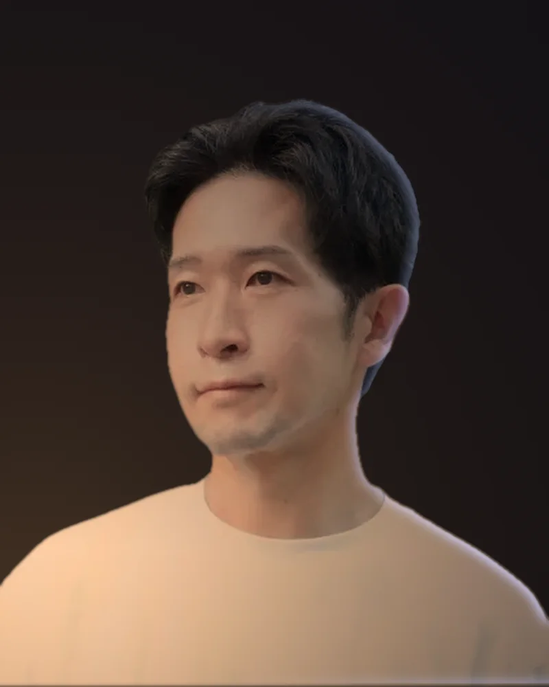
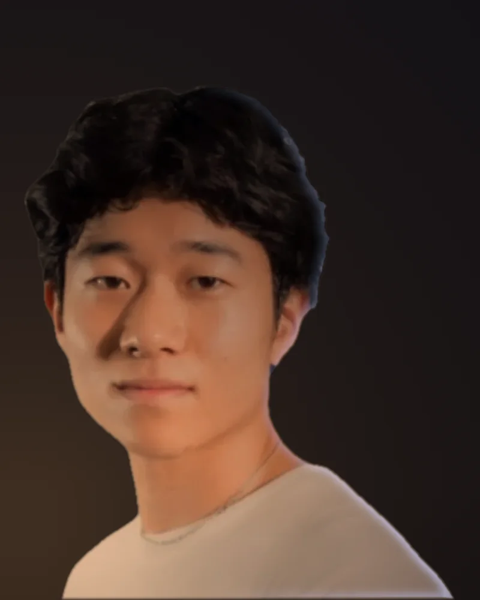
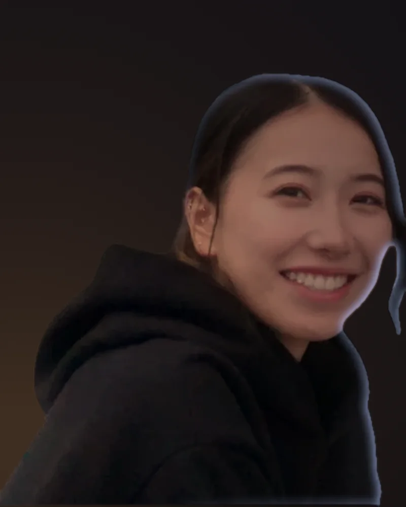
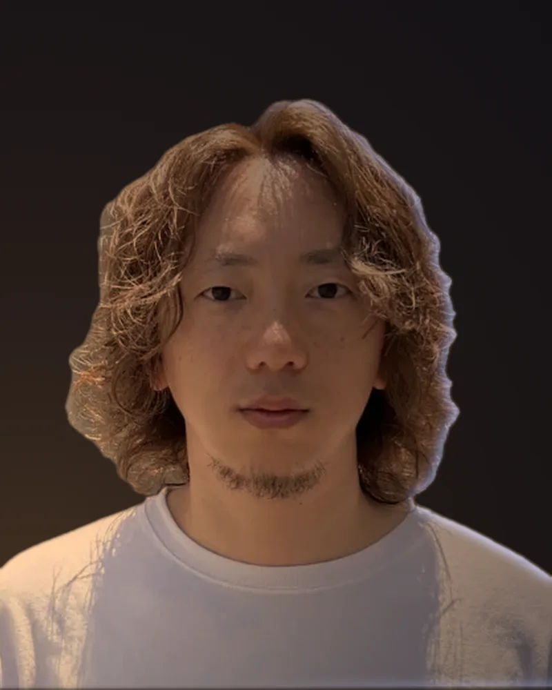
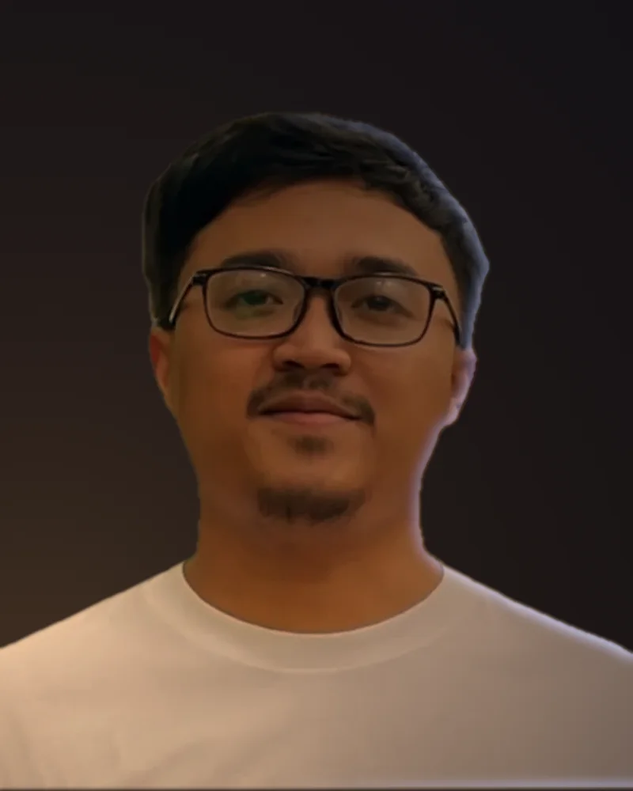
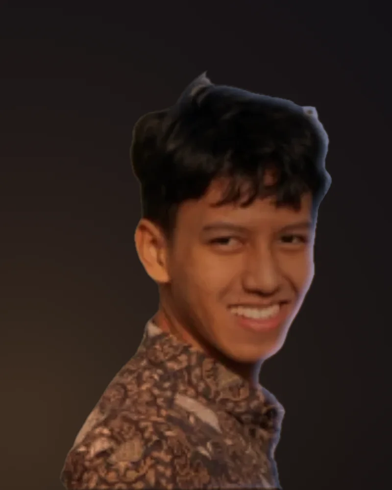
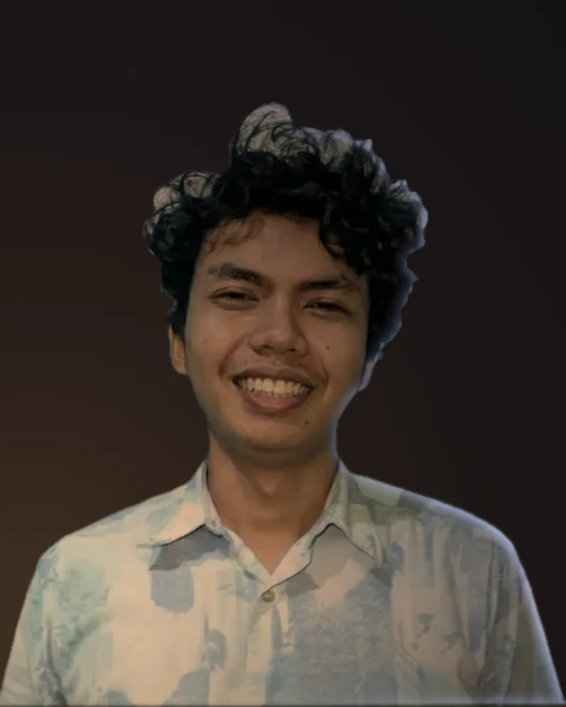

CEO
Keiji Hashimoto
大手通信会社の
大手から
既存の
主に
事業展開と
大切にする価値観
会社の
労働の
会社の
行動指針
世界一楽しく
各自の
年齢や
チーム内では
全体
楽しく働くことの意義
今後、
その
「パイ
チームに求める人間像

CEO
大手通信会社の

PM/Art Director
東京生まれ、

Human Resource
愛知生まれ、
サムライスタイルでは

Project Manager
福岡在住。

Engineer Manager
インドネシア生まれ、

Engineer
インドネシア出身。

Engineer
インドネシア出身。
コンテンツディレクター
業務委託